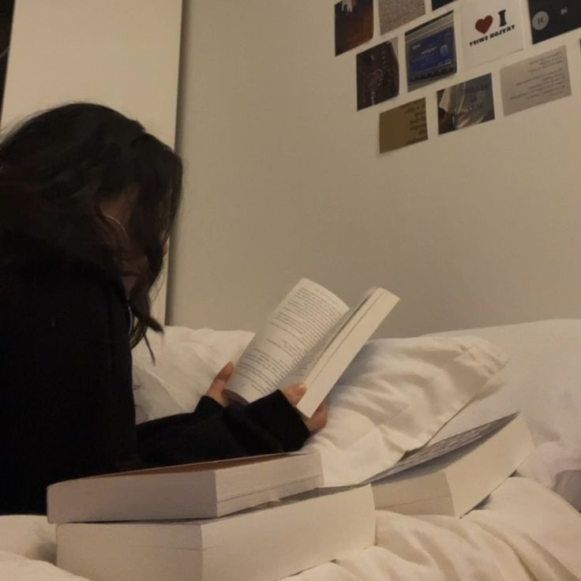
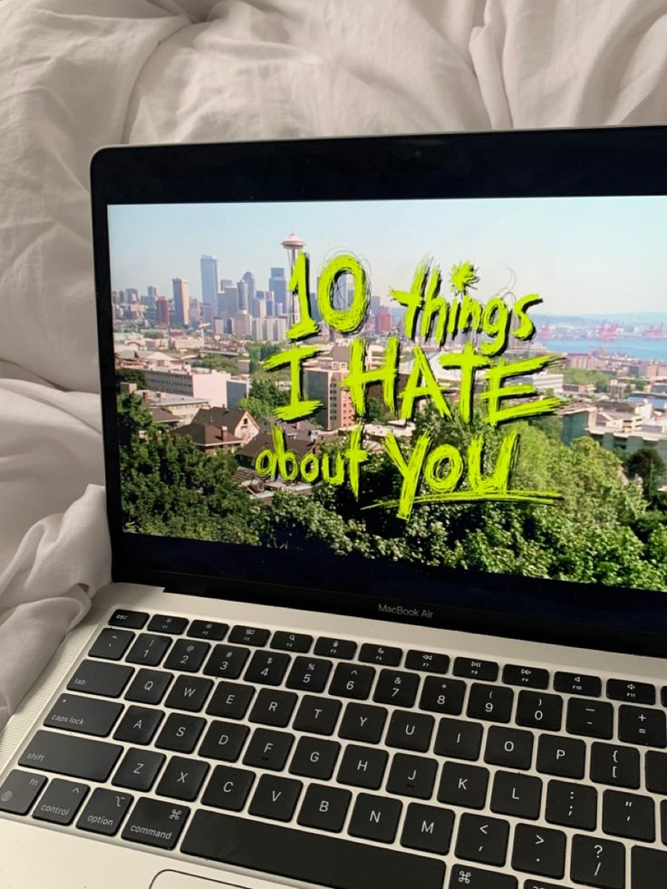

Me chamo Maddu, tenho 17 anos e estudo no Sesi de Pinhais. Quero fazer faculdade de Direito e pretendo seguir carreira na área
Atualmente moro em Pinhais, mas no futuro eu gostaria de morar na praia e ter uma chácara para passar bons momentos em família

Tenho muitos hobbies, mas a minha maior paixão é a leitura. A maioria dos livros que eu leio são livros de romance ou fantasia
Gosto muito de assistir séries e filmes, mas é dificil assistir coisas diferentes. No fim eu sempre escolho a mesma coisa pra assistir
